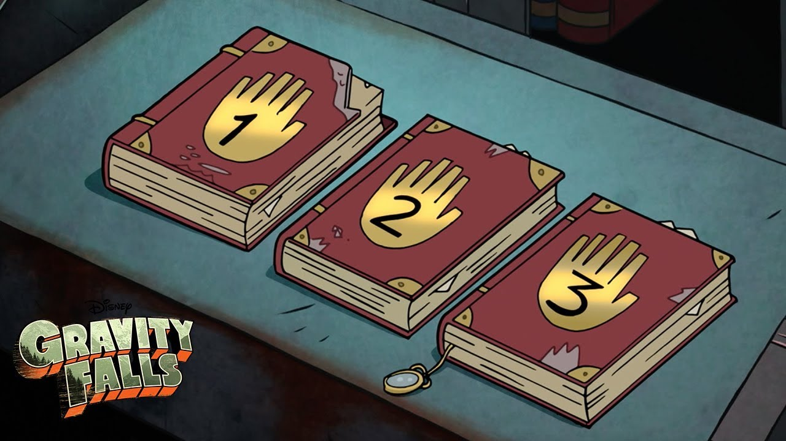

Gravity Fall Journals
Journal 1
Journal 1: The first journal Stanford wrote. It introduces early discoveries about the supernatural and the creation of the portal. Journal 2: Continues with deeper research into the creatures and phenomena of Gravity Falls and details more dangerous creatures. Journal 3: The journal most prominently featured in the series. It covers more advanced research and includes the author’s final thoughts on Bill Cipher, the portal, and the various creatures he encountered.
Appearance of Journals
The journals have a distinctive, weathered look with dark red leather covers and gold corner accents. Each journal has a large gold handprint embossed on the front cover, with the corresponding volume number (1, 2, or 3) written in the palm of the hand. The pages inside are often yellowed, giving them an aged, ancient feel. Over time, the books show signs of wear, with some tears, stains, and scuffs, further adding to their mystique and history.